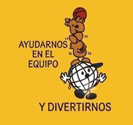
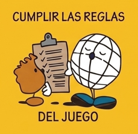
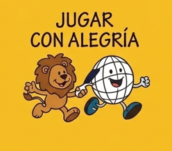

TU RETO DE PAZ PARA ESTE JUEGO
Ayudarnos en equipo
Ofrece ayuda, comparte una idea y anima a tu equipo para que todos puedan disfrutar.
JUGAR MEJOR ES CONSTRUIR PAZ
Lanza el dado y descubre una forma de convertir cada juego en una experiencia de paz, amistad, respeto e inclusión.





Ofrece ayuda, comparte una idea y anima a tu equipo para que todos puedan disfrutar.
LAS SEIS CARAS
Pulsa una tarjeta para descubrir una acción sencilla.
“En el juego ideal, nadie sobra y todos ayudan a construir la alegría.”
Jugar · Respetar · Incluir